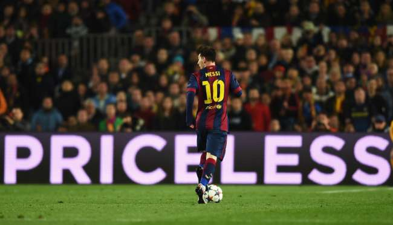
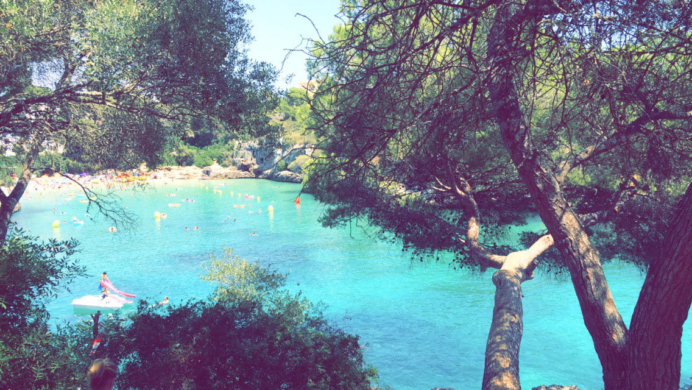
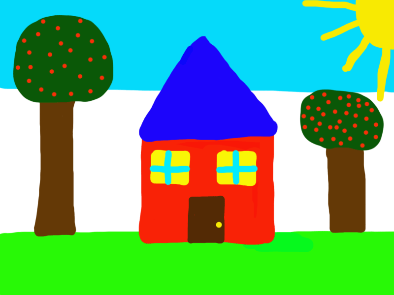
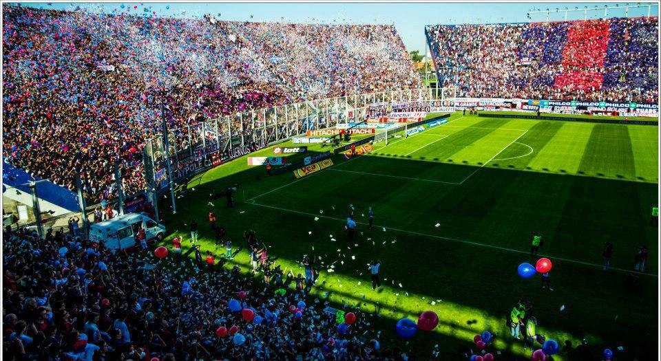

|  |
JPEG, 650 x 372 pixels, 26KB
(http://www.goal.com/en/news/messi-renewed-but-barca-have-other-problems/1kt1ctro7e2i81k03rxncyqcjb) |
| 
| JPEG, 1136 × 640 pixels, 332KB, (Photo taken by me) |
|  |
PNG, 800 × 600 pixels, 46KB, (Drawing by me in PS) |
|  |
JPEG, 960 × 525 pixels, 143KB,
(http://www.calcioweb.eu/2013/09/risultati-campionato-argentino-il-san-lorenzo-passa-in-casa-del-colon/69181/) |
 |
PNG, 800 x 600 pixels, 51KB, (Made by me in Photoshop) |
| |
JPEG, 275 x 183 pixels, 8KB,
(https://www.pexels.com/search/clouds/) |
| |
PNG, 275 x 183 pixels, 86KB, (modified by me in Photoshop) |